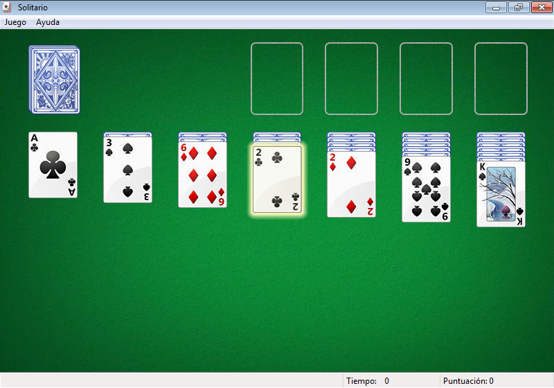

1. Introducción

La práctica de hoy veremos algunas de las aplicaciones que vienen preinstaladas con Windows 7, veremos como podríamos instalar/desinstalar aplicaciones en nuestro ordenador, y practicaremos la instalación de programas mediante la utilidad de PortableApps.
2. Abrir aplicaciones poco comunes
Empecemos por algo sencillito. Utilizando el menú de inicio de Windows 7:
- ¿Sabrías abrir la calculadora?
- ¿Sabrías abrir ahora el juego solitario?
- Repasando cosas de la clase anterior, sabrías anclar el solitario a la barra de tareas?
3. Instalar/desinstalar programas
Aunque en los ordenadores de la UJI no podemos instalar software, vamos a probarlo.
- Conéctate a la web de http://mozilla.com y descarga el programa Firefox
- Inicia la instalación, hasta donde te deje llegar.
- Intenta desinstalar Firefox. Para ello, ves al menú inicio - Panel de Control - Programas - Desinstalar un programa. Inicia el proceso de desinstalación, hasta donde te deje.
4. Instalar/desinstalar programas con PortableApps

Vamos a instalar algún programa con PortableApps, algo sencillo e inocuo ya que toda la instalación se realiza en una carpeta de nuestro espacio de usuario.
- Descárgate el instalador de las PortableApps de aqui.
- Inicia el proceso de instalación y configura la carpeta de Portableapps en el escritorio con el nombre "portables".
- Arranca las PortableApps e instala los programas: Navegador Opera (Categoría Internet), WinDirStat (categoría Herramientas), Celestia (categoría Educacion), y las que tú quieras.